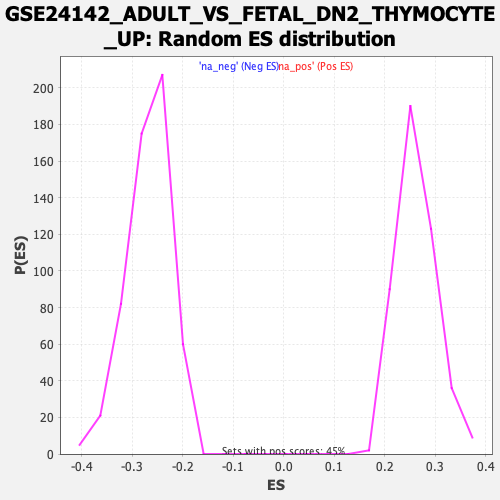

Profile of the Running ES Score & Positions of GeneSet Members on the Rank Ordered List
| Dataset | qlf.KOd4vsWTd4_gsea_score |
| Phenotype | NoPhenotypeAvailable |
| Upregulated in class | na_neg |
| GeneSet | GSE24142_ADULT_VS_FETAL_DN2_THYMOCYTE_UP |
| Enrichment Score (ES) | -0.5829555 |
| Normalized Enrichment Score (NES) | -2.1812723 |
| Nominal p-value | 0.0 |
| FDR q-value | 0.0 |
| FWER p-Value | 0.0 |
| SYMBOL | RANK IN GENE LIST | RANK METRIC SCORE | RUNNING ES | CORE ENRICHMENT | |
|---|---|---|---|---|---|
| 1 | CTSW | 127 | 4.426 | 0.0038 | No |
| 2 | CASP1 | 133 | 4.365 | 0.0191 | No |
| 3 | TNFRSF18 | 165 | 4.163 | 0.0313 | No |
| 4 | PISD | 330 | 3.298 | 0.0274 | No |
| 5 | RAB11FIP5 | 372 | 3.174 | 0.0349 | No |
| 6 | WLS | 411 | 3.044 | 0.0423 | No |
| 7 | DHRS3 | 531 | 2.789 | 0.0409 | No |
| 8 | ACADL | 650 | 2.514 | 0.0387 | No |
| 9 | SYTL2 | 780 | 2.283 | 0.0345 | No |
| 10 | STAMBPL1 | 819 | 2.236 | 0.0389 | No |
| 11 | GBP6 | 905 | 2.119 | 0.0384 | No |
| 12 | CALCRL | 1190 | 1.739 | 0.0173 | No |
| 13 | LANCL1 | 1210 | 1.719 | 0.0217 | No |
| 14 | NEFH | 1582 | 1.386 | -0.0091 | No |
| 15 | MDFIC | 1646 | 1.337 | -0.0103 | No |
| 16 | FRMD6 | 1747 | 1.266 | -0.0154 | No |
| 17 | NCOA1 | 1854 | 1.181 | -0.0213 | No |
| 18 | ABCA1 | 1889 | 1.160 | -0.0204 | No |
| 19 | CASP4 | 1963 | 1.104 | -0.0234 | No |
| 20 | FOXJ2 | 1965 | 1.104 | -0.0195 | No |
| 21 | RWDD3 | 2154 | 0.983 | -0.0341 | No |
| 22 | IGF2R | 2313 | 0.889 | -0.0461 | No |
| 23 | IRF1 | 2314 | 0.889 | -0.0429 | No |
| 24 | LAPTM4B | 2533 | 0.786 | -0.0611 | No |
| 25 | KANSL1L | 2569 | 0.767 | -0.0617 | No |
| 26 | INSL6 | 2638 | 0.745 | -0.0655 | No |
| 27 | ANXA4 | 2681 | 0.726 | -0.0670 | No |
| 28 | TBC1D24 | 2752 | 0.690 | -0.0712 | No |
| 29 | ID3 | 3066 | 0.574 | -0.0993 | No |
| 30 | PARN | 3209 | 0.521 | -0.1112 | No |
| 31 | DBP | 3382 | 0.466 | -0.1261 | No |
| 32 | RASL11B | 3658 | 0.380 | -0.1512 | No |
| 33 | ISOC1 | 3660 | 0.379 | -0.1500 | No |
| 34 | ENC1 | 3702 | 0.370 | -0.1526 | No |
| 35 | SERPINE2 | 3975 | 0.297 | -0.1778 | No |
| 36 | LY6D | 4246 | 0.227 | -0.2030 | No |
| 37 | B2M | 4265 | 0.223 | -0.2039 | No |
| 38 | GBP4 | 4572 | 0.148 | -0.2329 | No |
| 39 | TANC1 | 4600 | 0.144 | -0.2350 | No |
| 40 | ALCAM | 4856 | 0.095 | -0.2593 | No |
| 41 | FBXO28 | 5106 | 0.050 | -0.2831 | No |
| 42 | QPCT | 5162 | 0.041 | -0.2883 | No |
| 43 | TOB2 | 5174 | 0.040 | -0.2892 | No |
| 44 | SLC30A4 | 5323 | 0.015 | -0.3034 | No |
| 45 | DECR2 | 5382 | 0.004 | -0.3090 | No |
| 46 | PHLPP1 | 5410 | -0.002 | -0.3116 | No |
| 47 | MXI1 | 5425 | -0.005 | -0.3129 | No |
| 48 | SLCO3A1 | 5756 | -0.058 | -0.3446 | No |
| 49 | MPP1 | 5977 | -0.093 | -0.3655 | No |
| 50 | CD6 | 6007 | -0.098 | -0.3679 | No |
| 51 | PCK2 | 6097 | -0.114 | -0.3761 | No |
| 52 | ADGRD1 | 6159 | -0.125 | -0.3815 | No |
| 53 | ANAPC5 | 6264 | -0.148 | -0.3910 | No |
| 54 | RCAN3 | 6316 | -0.158 | -0.3954 | No |
| 55 | CD99L2 | 6357 | -0.167 | -0.3986 | No |
| 56 | RBM43 | 6556 | -0.211 | -0.4170 | No |
| 57 | ITPR2 | 6679 | -0.245 | -0.4279 | No |
| 58 | SNX9 | 6820 | -0.280 | -0.4404 | No |
| 59 | DNTT | 6881 | -0.296 | -0.4451 | No |
| 60 | GOSR1 | 7013 | -0.333 | -0.4565 | No |
| 61 | DDHD2 | 7073 | -0.348 | -0.4610 | No |
| 62 | BCL2L2 | 7161 | -0.375 | -0.4680 | No |
| 63 | STK11 | 7218 | -0.390 | -0.4720 | No |
| 64 | CPQ | 7273 | -0.407 | -0.4757 | No |
| 65 | PRKCE | 7313 | -0.422 | -0.4780 | No |
| 66 | CTSS | 7522 | -0.501 | -0.4962 | No |
| 67 | KLF6 | 7596 | -0.528 | -0.5014 | No |
| 68 | DSTYK | 7621 | -0.537 | -0.5017 | No |
| 69 | PTGER2 | 7642 | -0.548 | -0.5017 | No |
| 70 | TEP1 | 7860 | -0.636 | -0.5203 | No |
| 71 | DNASE1L1 | 7896 | -0.651 | -0.5213 | No |
| 72 | RELL1 | 7987 | -0.687 | -0.5275 | No |
| 73 | RPS6KA2 | 8048 | -0.713 | -0.5307 | No |
| 74 | MXD3 | 8108 | -0.740 | -0.5337 | No |
| 75 | ATP6V0A2 | 8175 | -0.773 | -0.5373 | No |
| 76 | HMGN3 | 8197 | -0.787 | -0.5365 | No |
| 77 | BBS9 | 8216 | -0.797 | -0.5353 | No |
| 78 | WBP1 | 8239 | -0.812 | -0.5345 | No |
| 79 | ZADH2 | 8258 | -0.823 | -0.5333 | No |
| 80 | IL6ST | 8366 | -0.881 | -0.5404 | No |
| 81 | TSC22D3 | 8378 | -0.892 | -0.5382 | No |
| 82 | FEZ2 | 8491 | -0.961 | -0.5455 | No |
| 83 | ERBB3 | 8528 | -0.986 | -0.5454 | No |
| 84 | ARHGAP29 | 8657 | -1.063 | -0.5539 | No |
| 85 | ZBTB20 | 8935 | -1.261 | -0.5761 | No |
| 86 | GTPBP2 | 9007 | -1.324 | -0.5782 | Yes |
| 87 | RAB6B | 9026 | -1.337 | -0.5750 | Yes |
| 88 | PLXDC1 | 9041 | -1.344 | -0.5715 | Yes |
| 89 | PCBP3 | 9102 | -1.407 | -0.5722 | Yes |
| 90 | LGALS8 | 9142 | -1.446 | -0.5707 | Yes |
| 91 | AGTRAP | 9181 | -1.500 | -0.5690 | Yes |
| 92 | LATS2 | 9187 | -1.510 | -0.5640 | Yes |
| 93 | GPRC5B | 9285 | -1.604 | -0.5675 | Yes |
| 94 | CCDC28A | 9313 | -1.632 | -0.5642 | Yes |
| 95 | GPSM2 | 9346 | -1.668 | -0.5612 | Yes |
| 96 | SUN2 | 9365 | -1.688 | -0.5568 | Yes |
| 97 | FGF13 | 9416 | -1.748 | -0.5553 | Yes |
| 98 | PITPNC1 | 9467 | -1.824 | -0.5535 | Yes |
| 99 | SCML4 | 9509 | -1.891 | -0.5506 | Yes |
| 100 | CD96 | 9527 | -1.912 | -0.5453 | Yes |
| 101 | MCOLN1 | 9528 | -1.915 | -0.5384 | Yes |
| 102 | CDKN2C | 9551 | -1.964 | -0.5334 | Yes |
| 103 | CD247 | 9582 | -2.010 | -0.5290 | Yes |
| 104 | SMOX | 9620 | -2.072 | -0.5251 | Yes |
| 105 | YPEL5 | 9649 | -2.124 | -0.5201 | Yes |
| 106 | TMEM176B | 9662 | -2.143 | -0.5134 | Yes |
| 107 | ARC | 9667 | -2.162 | -0.5060 | Yes |
| 108 | ATP1B1 | 9674 | -2.171 | -0.4987 | Yes |
| 109 | TRAF3IP2 | 9684 | -2.191 | -0.4916 | Yes |
| 110 | IL27RA | 9745 | -2.318 | -0.4890 | Yes |
| 111 | IFIT2 | 9746 | -2.319 | -0.4806 | Yes |
| 112 | SERPINI1 | 9757 | -2.343 | -0.4730 | Yes |
| 113 | PIPOX | 9813 | -2.452 | -0.4695 | Yes |
| 114 | GRN | 9817 | -2.460 | -0.4608 | Yes |
| 115 | MBOAT1 | 9831 | -2.482 | -0.4531 | Yes |
| 116 | SLC37A2 | 9862 | -2.539 | -0.4468 | Yes |
| 117 | B3GNT5 | 9863 | -2.545 | -0.4375 | Yes |
| 118 | BAIAP3 | 9872 | -2.562 | -0.4290 | Yes |
| 119 | ATP6V1D | 9918 | -2.671 | -0.4237 | Yes |
| 120 | IFNGR1 | 9928 | -2.711 | -0.4147 | Yes |
| 121 | PLD3 | 10005 | -2.915 | -0.4115 | Yes |
| 122 | ABTB1 | 10031 | -2.986 | -0.4031 | Yes |
| 123 | ADCY6 | 10076 | -3.179 | -0.3958 | Yes |
| 124 | SYNJ2 | 10132 | -3.382 | -0.3888 | Yes |
| 125 | MKRN1 | 10136 | -3.398 | -0.3768 | Yes |
| 126 | CCNG2 | 10144 | -3.448 | -0.3650 | Yes |
| 127 | PTPN22 | 10168 | -3.515 | -0.3544 | Yes |
| 128 | TMEM191C | 10181 | -3.596 | -0.3425 | Yes |
| 129 | CD84 | 10230 | -3.858 | -0.3332 | Yes |
| 130 | INPP5K | 10231 | -3.859 | -0.3192 | Yes |
| 131 | ARHGEF18 | 10244 | -3.987 | -0.3059 | Yes |
| 132 | RSAD2 | 10252 | -4.034 | -0.2919 | Yes |
| 133 | ST6GAL1 | 10265 | -4.109 | -0.2782 | Yes |
| 134 | SARAF | 10270 | -4.139 | -0.2635 | Yes |
| 135 | PKP3 | 10275 | -4.173 | -0.2488 | Yes |
| 136 | DHX58 | 10303 | -4.343 | -0.2357 | Yes |
| 137 | YPEL3 | 10318 | -4.437 | -0.2209 | Yes |
| 138 | SCARB2 | 10324 | -4.466 | -0.2052 | Yes |
| 139 | SYNE1 | 10354 | -4.703 | -0.1909 | Yes |
| 140 | EMP1 | 10376 | -4.899 | -0.1752 | Yes |
| 141 | SLC14A1 | 10380 | -4.950 | -0.1575 | Yes |
| 142 | PTPRA | 10392 | -5.042 | -0.1403 | Yes |
| 143 | UNC119B | 10393 | -5.093 | -0.1218 | Yes |
| 144 | CAMK1D | 10404 | -5.209 | -0.1039 | Yes |
| 145 | BCL6 | 10420 | -5.342 | -0.0860 | Yes |
| 146 | TMEM71 | 10438 | -5.683 | -0.0670 | Yes |
| 147 | TMEM63A | 10445 | -5.761 | -0.0467 | Yes |
| 148 | RTP4 | 10467 | -6.355 | -0.0257 | Yes |
| 149 | SELL | 10504 | -8.138 | 0.0004 | Yes |
